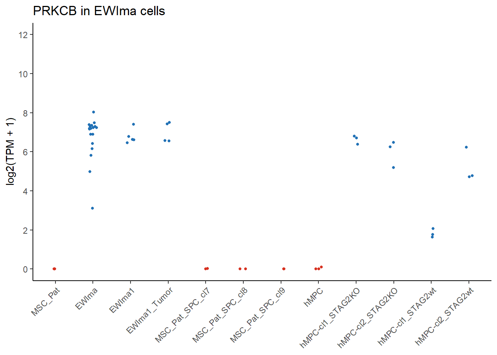
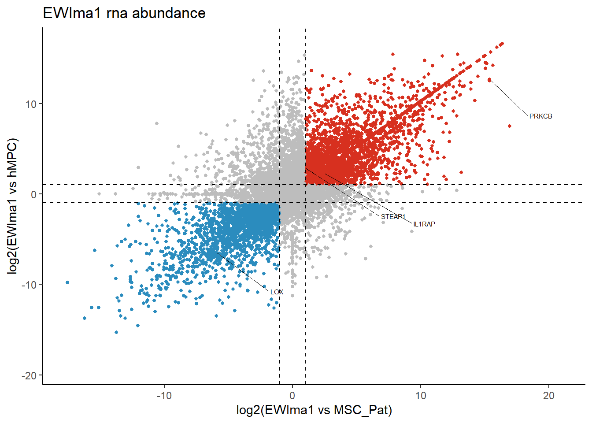

##########################################################################################
library('tidyverse')
library('ggplot2')
library('RColorBrewer')
library('tximport')
library('GenomicFeatures')
library('DESeq2')
library('ggrepel')
library('org.Hs.eg.db')Sole RNA-seq data processing
Details
This document describes processing of RNA-seq data derived from a work where they induced formation of EwS in MSCs using CRISPR (PMID: 34341072, GEO: GSE150777, SRA: SRP262164). The data have been reprocessed to quantification as described elsewhere in these documents
Setting up the environment
These are packages you will need for this notebook. For exact versions used, please refer to the session info at the bottom of this notebook.
I want to set a base directory that we can use as a link to the directory where we will do most of the work. I use two directories here because the Workspace is what is pushed to GitHub and contains scripts and plot files, but the Repository is where more of the big data is stored that does not get pushed.
##########################################################################################
generalDatasets = 'C:/Users/chughes/Documents/bccrc/projectsRepository/generalDatasets'
baseWorkspace = 'C:/Users/chughes/Documents/bccrc/projectsWorkspace/sorensenLab/relatedToEwsCrisprManuscript'
baseRepository = 'C:/Users/chughes/Documents/bccrc/projectsRepository/sorensenLab/relatedToEwsCrisprManuscript'Data processing
The first thing to do is to make a sample annotation table. This is kind of a mixed bag of samples, so I opted to do this manually.
##########################################################################################
##set the sample names
sampleNamesFromGeo = c('hMPC-cl1_STAG2KO','hMPC-cl1_STAG2KO','hMPC-cl1_STAG2KO',
'hMPC-cl2_STAG2KO','hMPC-cl2_STAG2KO','hMPC-cl2_STAG2KO',
'hMPC-cl1_STAG2wt','hMPC-cl1_STAG2wt','hMPC-cl1_STAG2wt',
'hMPC-cl2_STAG2wt','hMPC-cl2_STAG2wt','hMPC-cl2_STAG2wt',
'hMPC','hMPC','hMPC',
'EWIma1','EWIma1','EWIma1','EWIma1','EWIma1',
'EWIma1_Tumor','EWIma1_Tumor','EWIma1_Tumor',
'EWIma1_siCT','EWIma1_siCT','EWIma1_siEF1','EWIma1_siEF1',
'EWIma1_Tumor','MSC_Pat_SPC_cl7','MSC_Pat_SPC_cl9','MSC_Pat_SPC_cl8',
'MSC_Pat_SPC_cl7','MSC_Pat_SPC_cl9','MSC_Pat_SPC_cl8',
'MSC_Pat','MSC_Pat','MSC_Pat',
'EWIma','EWIma','EWIma','EWIma','EWIma','EWIma','EWIma','EWIma',
'EWIma','EWIma','EWIma','EWIma','EWIma','EWIma','EWIma','EWIma',
'EWIma','EWIma','EWIma5_Tum_leg','EWIma5_Tum1_meta_liver','EWIma5_Tum2_meta_liver',
'EWIma7_Tum_meta_liver','EWIma7_Tum_leg')
##set the replicate details
replicatesFromGeo = c('R1','R2','R3','R1','R2','R3',
'R1','R2','R3','R1','R2','R3',
'R1','R2','R3','R5','R4','R1','R2','R3',
'R2','R3','R4','R1','R2','R1','R2',
'R1','R1','R1','R1','R2','R2','R2','R1','R2','R3',
'R6','R25','R10','R12','R4','R9','R8','R11',
'R31','R15','R14','R26','R13','R2','R30','R7',
'R5','R12','R1','R1','R2','R1','R1')
##read in the sample annotation information from GEO and combine with the above details
samples = read_csv(paste(baseRepository, '/defineCandidatesExpressionData/soleInducedEwsRnaSeq/SraRunTable.txt',sep=''), show_col_types = FALSE) %>%
dplyr::select(Run, `GEO_Accession (exp)`, cdkn2a, stag2, tp53, `ewsr1-fli1`) %>%
dplyr::rename(accession = 'Run', geo = `GEO_Accession (exp)`, ef1 = `ewsr1-fli1`) %>%
dplyr::arrange(accession) %>%
dplyr::mutate(sampleNames = sampleNamesFromGeo, replicate = replicatesFromGeo)Now that we have our annotation details, we can start to sort out the quantification data that we obtained from the data reprocessing. The code below will get the file paths for the quant files, read in our transcriptome gtf, and using tximport to read in the entire dataset.
##########################################################################################
##get the locations of all of the quant files and check they are correct
quantFiles = file.path(paste(baseRepository, '/defineCandidatesExpressionData/soleInducedEwsRnaSeq/quants', sep = ''), samples$accession, 'quant.sf')
names(quantFiles) = samples$accession
all(file.exists(quantFiles))[1] TRUE##build the transcriptome index...this is based on the same gtf we used in the alignment process
txdb = makeTxDbFromGFF('D:/databases/projectEwsDlg2/baseGenomeFiles/genome.gtf')Import genomic features from the file as a GRanges object ... OK
Prepare the 'metadata' data frame ... OK
Make the TxDb object ... Warning in .get_cds_IDX(mcols0$type, mcols0$phase): The "phase" metadata column contains non-NA values for features of type
stop_codon. This information was ignored.OKk = keys(txdb, keytype = "TXNAME")
tx2gene = select(txdb, k, c("GENEID", "TXSTART", "TXEND"), "TXNAME")'select()' returned 1:1 mapping between keys and columns##read the transcriptome data processed from salmon
txi = tximport(quantFiles, type = 'salmon', tx2gene = tx2gene)reading in files with read_tsv
1 2 3 4 5 6 7 8 9 10 11 12 13 14 15 16 17 18 19 20 21 22 23 24 25 26 27 28 29 30 31 32 33 34 35 36 37 38 39 40 41 42 43 44 45 46 47 48 49 50 51 52 53 54 55 56 57 58 59 60
summarizing abundance
summarizing counts
summarizing lengthnames(txi)[1] "abundance" "counts" "length"
[4] "countsFromAbundance"txiAnnotated = tibble(as.data.frame(txi$abundance)) %>%
mutate('ENSEMBL' = sub('(.*)\\.[0-9]+$', '\\1', row.names(txi$abundance)))Take a quick look at these data for a couple of positive control genes to make sure it is as we expect for each sample.
##########################################################################################
##add in gene symbols
geneSymbols = select(org.Hs.eg.db, txiAnnotated$ENSEMBL, c('ENSEMBL','SYMBOL'), 'ENSEMBL') 'select()' returned 1:many mapping between keys and columnsgeneExpData = txiAnnotated %>%
left_join(geneSymbols) %>%
mutate(symbol = SYMBOL)Joining, by = "ENSEMBL"##extract the target gene from the data and set up the data frame for plotting
targetGenes = c('PRKCB')
targetData = geneExpData %>%
dplyr::filter(symbol %in% targetGenes) %>%
tidyr::pivot_longer(cols = SRR11807630:SRR14743630, names_to = 'accession', values_to = 'tpm') %>%
dplyr::select(symbol,accession,tpm) %>%
dplyr::mutate(tpm = log2(tpm + 1)) %>%
dplyr::left_join(samples) %>%
dplyr::filter(!grepl('_si', sampleNames) & !grepl('EWIma[57]', sampleNames)) %>%
dplyr::mutate(sampleNames = factor(sampleNames, levels = c('MSC_Pat','EWIma','EWIma1','EWIma1_Tumor',
'MSC_Pat_SPC_cl7','MSC_Pat_SPC_cl8','MSC_Pat_SPC_cl9',
'hMPC','hMPC-cl1_STAG2KO','hMPC-cl2_STAG2KO',
'hMPC-cl1_STAG2wt','hMPC-cl2_STAG2wt')))Joining, by = "accession"##set some colors for the plot
sampleColors = c(brewer.pal(4,'OrRd')[4],
rep(brewer.pal(4,'Blues')[4],3),
rep(brewer.pal(4,'OrRd')[4],4),
rep(brewer.pal(4,'Blues')[4],4))
##create the plot
ggplot(targetData, aes(sampleNames, tpm, color = sampleNames)) +
geom_point(aes(x=sampleNames, y=tpm), data = targetData, size = 1, position = position_jitter(w = 0.1, h = 0)) +
scale_color_manual(values = sampleColors) +
labs(y = 'log2(TPM + 1)', title = 'PRKCB in EWIma cells') +
scale_y_continuous(limits = c(0,12), breaks = seq(0,16,2)) +
theme_classic() +
theme(legend.position = 'none',
axis.title.x=element_blank(),
axis.text.x = element_text(angle = 45, hjust = 1)
)
##save the plot in case we want it later
ggsave(paste(baseRepository, '/defineCandidatesExpressionData/soleInducedEwsRnaSeq/plots/scatter_PRKCB_RnaExpressionLevels.pdf', sep = ''),
height = 2, width = 2, useDingbats = FALSE)This looks as we expect with PRKCB expression induced in the EWIma cells and in no others. The next thing we can do is to perform a differential expression analysis between the EWIma cells and the hMPC and MSC_Pat progenitors and see what comes out. We will do this using DESeq2.
##########################################################################################
##re-extract the quantification data for a subset of the files
samplesOfInterest = c('MSC_Pat','hMPC','EWIma1')
samplesForDe = samples %>%
dplyr::filter(sampleNames %in% samplesOfInterest) %>%
dplyr::mutate(sampleNames = factor(sampleNames, levels = c('MSC_Pat','hMPC','EWIma1')))
#
quantFilesForDe = file.path(paste(baseRepository, '/defineCandidatesExpressionData/soleInducedEwsRnaSeq/quants', sep = ''), samplesForDe$accession, 'quant.sf')
names(quantFilesForDe) = samplesForDe$accession
all(file.exists(quantFilesForDe))[1] TRUE#
txiForDe = tximport(quantFilesForDe, type = 'salmon', tx2gene = tx2gene)reading in files with read_tsv1 2 3 4 5 6 7 8 9 10 11
summarizing abundance
summarizing counts
summarizing length##perform the deseq analysis
ddsTxi = DESeqDataSetFromTximport(txiForDe,
colData = samplesForDe,
design = ~ sampleNames)using counts and average transcript lengths from tximportdds = DESeq(ddsTxi)estimating size factors
using 'avgTxLength' from assays(dds), correcting for library size
estimating dispersions
gene-wise dispersion estimates
mean-dispersion relationship
final dispersion estimates
fitting model and testingkeep = rowSums(counts(dds)) >= 10
dds = dds[keep,]Extract the DESeq data and plot for the different comparisons of interest.
##########################################################################################
#parse the deseq data - change the first two values to get different comparisons
toCompare = c('MSC_Pat','hMPC')
for (i in 1:length(toCompare)){
datasetFirst = 'EWIma1'
datasetSecond = toCompare[i]
res = results(dds, contrast = c('sampleNames', datasetFirst, datasetSecond))
ens.str = substr(rownames(res), 1, 15)
res$symbol = mapIds(org.Hs.eg.db,
keys=ens.str,
column="SYMBOL",
keytype="ENSEMBL",
multiVals="first")
resOrdered = res[order(res$pvalue),]
#save the data
saveRDS(as.data.frame(resOrdered),
paste(baseRepository, '/defineCandidatesExpressionData/soleInducedEwsRnaSeq/datasetOutputs/dataset_deseq2_', datasetFirst, '-', datasetSecond, '.rds', sep = ''))
write.csv(as.data.frame(resOrdered),
file = paste(baseRepository, '/defineCandidatesExpressionData/soleInducedEwsRnaSeq/datasetOutputs/dataset_deseq2_', datasetFirst, '-', datasetSecond, '.csv', sep = ''))
##########################################################################################
#assign colors based on fold change and p-values
rnaExp = as.data.frame(resOrdered)
rnaExp$logPValue = -log10(rnaExp$padj)
rnaExp$logPValueScaled = ifelse(rnaExp$logPValue > 300, 300, rnaExp$logPValue)
rnaExp$pColors = ifelse(rnaExp$padj <= 0.001 & rnaExp$log2FoldChange >= 1, brewer.pal(4,'OrRd')[4],
ifelse(rnaExp$padj <= 0.001 & rnaExp$log2FoldChange <= -1, brewer.pal(4,'GnBu')[4], brewer.pal(3,'Greys')[2]))
#assign text labels to specific genes of interest
targetGenes = c('IL1RAP','STEAP1','PRKCB','LOX')
rnaExp$pText = ifelse(rnaExp$symbol %in% targetGenes, rnaExp$symbol, '')
#create the plot and save it
ggplot(rnaExp, aes(log2FoldChange, logPValueScaled)) +
geom_point(size = 1, color = rnaExp$pColors) +
labs(x = paste('log2(',datasetFirst,' - ',datasetSecond,')', sep = ''), y = '-log10(Adjusted p-value)', title = paste(datasetFirst,' vs ',datasetSecond, sep='')) +
geom_text_repel(label = rnaExp$pText, nudge_x = 0, nudge_y = 200, max.overlaps = 55000, size = 2, segment.size = 0.25) +
scale_x_continuous(limits = c(-16,16), breaks = seq(-20,20,3)) +
scale_y_continuous(limits = c(0,300), breaks = seq(0,500,50)) +
geom_vline(xintercept = c(-1,1), linetype = 'dashed') +
geom_hline(yintercept = -log10(0.001), linetype = 'dashed') +
theme_classic()
ggsave(paste(baseRepository, '/defineCandidatesExpressionData/soleInducedEwsRnaSeq/plots/scatter_deseq2_', datasetFirst, '-', datasetSecond, '.pdf', sep = ''),
height = 2, width = 2, useDingbats = FALSE)
}'select()' returned 1:many mapping between keys and columnsWarning: Removed 601 rows containing missing values (`geom_point()`).Warning: Removed 767 rows containing missing values (`geom_text_repel()`).'select()' returned 1:many mapping between keys and columnsWarning: Removed 1060 rows containing missing values (`geom_point()`).Warning: Removed 1229 rows containing missing values (`geom_text_repel()`).There are a ton of differentially expressed transcripts here. We can cross reference the two sets to get a combined list that we can use in our downstream analysis.
##########################################################################################
##read in the differential expression data
msc = tibble(readRDS(paste(baseRepository, '/defineCandidatesExpressionData/soleInducedEwsRnaSeq/datasetOutputs/dataset_deseq2_EWIma1-MSC_Pat.rds',sep=''))) %>%
dplyr::rename(msc_baseMean = baseMean,
msc_log2FoldChange = log2FoldChange,
msc_lfcSE = lfcSE,
msc_stat = stat,
msc_pvalue = pvalue,
msc_padj = padj) %>%
dplyr::filter(!is.na(symbol))
mpc = tibble(readRDS(paste(baseRepository, '/defineCandidatesExpressionData/soleInducedEwsRnaSeq/datasetOutputs/dataset_deseq2_EWIma1-hMPC.rds',sep=''))) %>%
dplyr::rename(mpc_baseMean = baseMean,
mpc_log2FoldChange = log2FoldChange,
mpc_lfcSE = lfcSE,
mpc_stat = stat,
mpc_pvalue = pvalue,
mpc_padj = padj) %>%
dplyr::filter(!is.na(symbol))
##combine the data
ewsDeData = msc %>%
full_join(mpc)Joining, by = "symbol"##assign some colors and text labels for the plot
ewsDeData$pColors = ifelse(ewsDeData$msc_log2FoldChange >= 1 & ewsDeData$mpc_log2FoldChange >= 1, brewer.pal(4,'OrRd')[4],
ifelse(ewsDeData$msc_log2FoldChange <= -1 & ewsDeData$mpc_log2FoldChange <= -1, brewer.pal(4,'GnBu')[4], brewer.pal(3,'Greys')[2]))
targetGenes = c('IL1RAP','STEAP1','PRKCB','LOX')
ewsDeData$pText = ifelse(ewsDeData$symbol %in% targetGenes, ewsDeData$symbol, '')
##plot these data
ggplot(ewsDeData, aes(msc_log2FoldChange, mpc_log2FoldChange)) +
geom_point(size = 1, color = ewsDeData$pColors) +
labs(x = paste('log2(EWIma1 vs MSC_Pat)', sep = ''), y = 'log2(EWIma1 vs hMPC)', title = 'EWIma1 rna abundance') +
geom_text_repel(label = ewsDeData$pText, nudge_x = 4, nudge_y = -4, max.overlaps = 55000, size = 2, segment.size = 0.25) +
#scale_x_continuous(limits = c(-16,16), breaks = seq(-20,20,3)) +
#scale_y_continuous(limits = c(0,300), breaks = seq(0,500,50)) +
geom_vline(xintercept = c(-1,1), linetype = 'dashed') +
geom_hline(yintercept = c(-1,1), linetype = 'dashed') +
theme_classic()
ggsave(paste(baseRepository, '/defineCandidatesExpressionData/soleInducedEwsRnaSeq/plots/scatter_deseq2_mscAndMpcDeData.pdf', sep = ''),
height = 2, width = 2, useDingbats = FALSE)
##save the data to a file
saveRDS(ewsDeData, paste(baseRepository, '/defineCandidatesExpressionData/soleInducedEwsRnaSeq/datasetOutputs/dataset_deseq2_mscAndMpcDeData.rds', sep = ''))
write.table(ewsDeData, paste(baseRepository, '/defineCandidatesExpressionData/soleInducedEwsRnaSeq/datasetOutputs/dataset_deseq2_mscAndMpcDeData.tsv', sep = ''),
row.names = FALSE, col.names = TRUE, quote = FALSE, sep = '\t')From these data, we want to parse out upregulated genes that appear to be increased in both conditions.
##########################################################################################
##filter the data and write to a file
ewsOutData = ewsDeData %>%
dplyr::filter(msc_padj <= 0.001 & mpc_padj <= 0.001 & msc_log2FoldChange >= 1 & mpc_log2FoldChange >= 1) %>%
dplyr::select(symbol, msc_log2FoldChange, mpc_log2FoldChange)
saveRDS(ewsOutData, paste(baseRepository, '/defineCandidatesExpressionData/soleInducedEwsRnaSeq/datasetOutputs/dataset_deseq2_candidates.rds', sep = ''))
write.table(ewsOutData, paste(baseRepository, '/defineCandidatesExpressionData/soleInducedEwsRnaSeq/datasetOutputs/dataset_deseq2_candidates.tsv', sep = ''),
row.names = FALSE, col.names = TRUE, quote = FALSE, sep = '\t')Done with these data for now.
Session info
##########################################################################################
sessionInfo()R version 4.2.2 (2022-10-31 ucrt)
Platform: x86_64-w64-mingw32/x64 (64-bit)
Running under: Windows 10 x64 (build 19042)
Matrix products: default
locale:
[1] LC_COLLATE=English_Canada.utf8 LC_CTYPE=English_Canada.utf8
[3] LC_MONETARY=English_Canada.utf8 LC_NUMERIC=C
[5] LC_TIME=English_Canada.utf8
attached base packages:
[1] stats4 stats graphics grDevices utils datasets methods
[8] base
other attached packages:
[1] org.Hs.eg.db_3.16.0 ggrepel_0.9.2
[3] DESeq2_1.38.2 SummarizedExperiment_1.28.0
[5] MatrixGenerics_1.10.0 matrixStats_0.63.0
[7] GenomicFeatures_1.50.3 AnnotationDbi_1.60.0
[9] Biobase_2.58.0 GenomicRanges_1.50.2
[11] GenomeInfoDb_1.34.6 IRanges_2.32.0
[13] S4Vectors_0.36.1 BiocGenerics_0.44.0
[15] tximport_1.26.1 RColorBrewer_1.1-3
[17] forcats_0.5.2 stringr_1.5.0
[19] dplyr_1.0.10 purrr_1.0.0
[21] readr_2.1.3 tidyr_1.2.1
[23] tibble_3.1.8 ggplot2_3.4.0
[25] tidyverse_1.3.2
loaded via a namespace (and not attached):
[1] googledrive_2.0.0 colorspace_2.0-3 rjson_0.2.21
[4] ellipsis_0.3.2 XVector_0.38.0 fs_1.5.2
[7] rstudioapi_0.14 farver_2.1.1 bit64_4.0.5
[10] fansi_1.0.3 lubridate_1.9.0 xml2_1.3.3
[13] codetools_0.2-18 cachem_1.0.6 geneplotter_1.76.0
[16] knitr_1.41 jsonlite_1.8.4 Rsamtools_2.14.0
[19] annotate_1.76.0 broom_1.0.2 dbplyr_2.2.1
[22] png_0.1-8 compiler_4.2.2 httr_1.4.4
[25] backports_1.4.1 assertthat_0.2.1 Matrix_1.5-1
[28] fastmap_1.1.0 gargle_1.2.1 cli_3.5.0
[31] htmltools_0.5.4 prettyunits_1.1.1 tools_4.2.2
[34] gtable_0.3.1 glue_1.6.2 GenomeInfoDbData_1.2.9
[37] rappdirs_0.3.3 Rcpp_1.0.9 cellranger_1.1.0
[40] vctrs_0.5.1 Biostrings_2.66.0 rtracklayer_1.58.0
[43] xfun_0.36 rvest_1.0.3 timechange_0.1.1
[46] lifecycle_1.0.3 restfulr_0.0.15 XML_3.99-0.13
[49] googlesheets4_1.0.1 zlibbioc_1.44.0 scales_1.2.1
[52] vroom_1.6.0 ragg_1.2.4 hms_1.1.2
[55] parallel_4.2.2 yaml_2.3.6 curl_4.3.3
[58] memoise_2.0.1 biomaRt_2.54.0 stringi_1.7.8
[61] RSQLite_2.2.20 BiocIO_1.8.0 filelock_1.0.2
[64] BiocParallel_1.32.5 systemfonts_1.0.4 rlang_1.0.6
[67] pkgconfig_2.0.3 bitops_1.0-7 evaluate_0.19
[70] lattice_0.20-45 labeling_0.4.2 GenomicAlignments_1.34.0
[73] htmlwidgets_1.6.1 bit_4.0.5 tidyselect_1.2.0
[76] magrittr_2.0.3 R6_2.5.1 generics_0.1.3
[79] DelayedArray_0.23.2 DBI_1.1.3 pillar_1.8.1
[82] haven_2.5.1 withr_2.5.0 KEGGREST_1.38.0
[85] RCurl_1.98-1.9 modelr_0.1.10 crayon_1.5.2
[88] utf8_1.2.2 BiocFileCache_2.6.0 tzdb_0.3.0
[91] rmarkdown_2.19 progress_1.2.2 locfit_1.5-9.7
[94] grid_4.2.2 readxl_1.4.1 blob_1.2.3
[97] reprex_2.0.2 digest_0.6.31 xtable_1.8-4
[100] textshaping_0.3.6 munsell_0.5.0